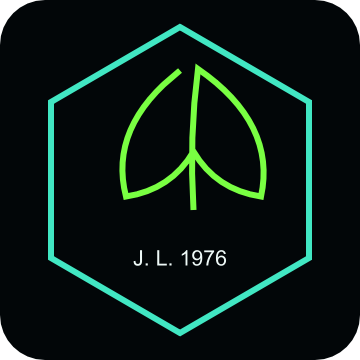
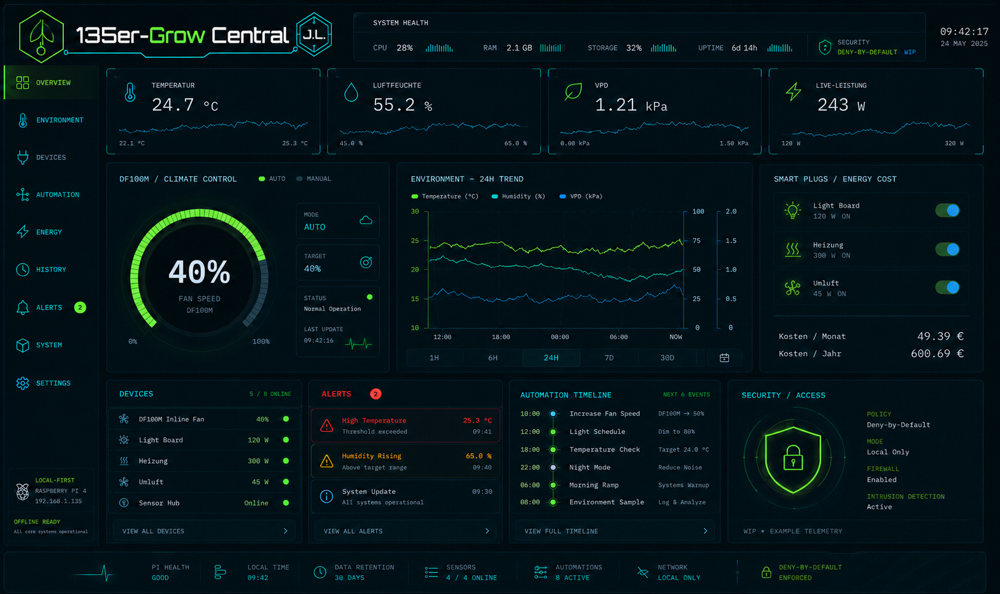
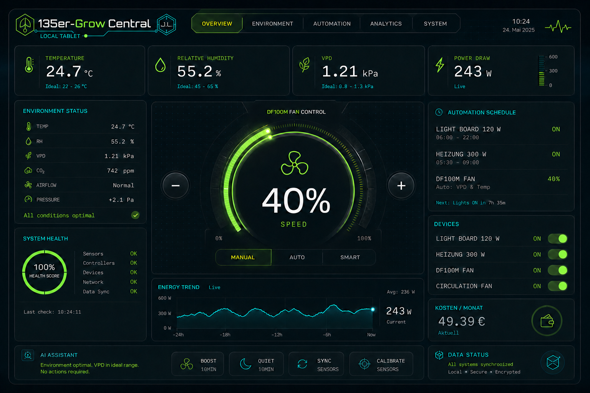
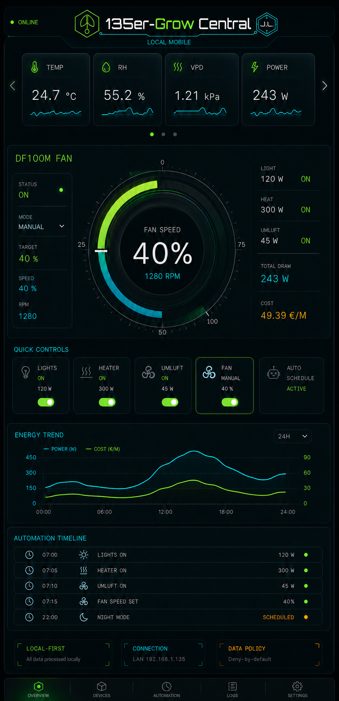
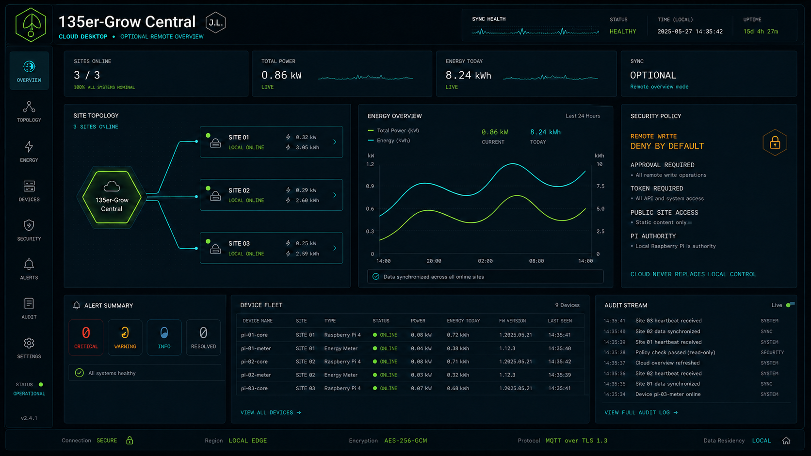

GC://LOCAL/COREONLINE
Lokale Kontrolle.
Intelligent orchestriert.
Eine souveräne Steuerzentrale für Klima, Geräte, Energie und Automationen. Der Raspberry Pi bleibt Master – schnell, privat und unabhängig.
- CONTROL
- LOCAL
- REMOTE
- OPTIONAL
- WRITES
- DENY DEFAULT
- PROJEKTLAUFZEIT
- WIRD GELADEN … seit Repository-Start · 08.08.2026

LOCAL CORERASPBERRY PI · ACTIVE
SYSTEM OVERVIEW
Alles Wesentliche. Ohne visuelles Rauschen.
Sensorik, Leistung und Regeln laufen in einer konsistenten lokalen Architektur zusammen.
UNIFIED INTERFACE FAMILY
Ein System. Vier präzise Perspektiven.
Jede Oberfläche folgt derselben Wort-Bild-Marke, derselben Datenlogik und denselben Sicherheitsprinzipien.
01 / LOCAL DESKTOP
Die vollständige Kommandozentrale.
Dichte Telemetrie, Klima-Regelung, Energie, Geräte, Alarmierung und Automations-Timeline in einer professionellen Arbeitsoberfläche.
- Raspberry Pi Master
- 24h Environmental Trends
- Deny-by-default Security




TRUST ARCHITECTURECloud erweitert.
Cloud erweitert.
Local entscheidet.
Jeder Schreibzugriff durchläuft vier explizite Hürden. Öffentliche Website, optionale Cloud und lokale Steuerung bleiben klar getrennte Vertrauensbereiche.
- 01InventoryGerät ist bekannt
- 02ApprovalExplizit freigegeben
- 03WritableWrite-Recht aktiv
- 04AuthenticatedToken und Audit
POLICYDENY
BY DEFAULT
BY DEFAULT
OPEN DEVELOPMENT · ALPHA 0.7.1
Repository öffnen